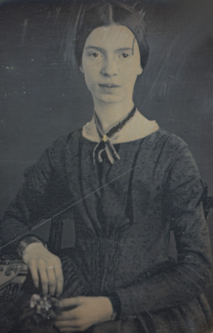

Correspondence
WUTHERING.UK
P.O. Box 1302
Grand Marais, MN, 55604
USA
 January, 2024
January, 2024
An inaugural explainer of the Dark Muse
 All at sea with the Dark Muse
All at sea with the Dark Muse
Introduction
The purpose of this media effort will be to convey some of my thoughts and impressions about things dark, or as I cal it, the Dark Muse1 muse: originally any of the nine sister goddesses in Greek mythology presiding over music, literature, and arts, or a state of deep thought or abstraction, or a source of inspiration . This would hopefully include, be a superset of what is known today as goth2 The modern “goth subculture” as perhaps described here. It’s as good as any… Lots more about goth and Dark Muse later. and gothic … meaning I hope to go deeper and more elemental than most modern takes on dark. And so I ask, Do you have an inexplicable affinity for things a tad gloomy? Do you find dreamy what they find dreary … like when a cloudy day brings out a strangely sanguine melancholy … or a stormy night is frightening in a wonderfully thrilling sort of way? Does twilight heighten your senses and calm your nerves? Perhaps you’ve paused to gaze out upon an old, overgrown cemetery, or a lonely, nondescript countryside scene? And of course you’re quickly maxed-out on happy-clappy, sunny-cheery. You prefer candlelight over artificial light, old architecture over new. And wouldn’t it be great if every month (or every week!) celebrated Halloween? If yes to any of this, I’m speaking to you.
Let’s start with an example, a litmus test of sorts. I present here a
poem from my main darkness benefactress, the poet who stands at the
centre of everything I mean to say about dark—one Emily Jane
Brontë! 3
Oddly enough, I’ve never read her Wuthering Heights and do
not intend to. However, her poetry I read continually, gleaning new
insights each time. See here for a quick biography.

Fall, leaves, fall; die, flowers, away;
Lengthen night and shorten day;
Every leaf speaks bliss to me
Fluttering from the autumn tree.
I shall smile when wreaths of snow
Blossom where the rose should grow;
I shall sing when night’s decay
Ushers in a drearier day.
Just a bit direct, blunt even. But there it is: You either get it or you don’t. Either she is speaking to something in you—or you’re immediately put off, finding it, yeah, well, weird, overwrought, melodramatic, puerile, morbid, or even sick or evil.
I’m confronted daily with people who consider my penchant for dark things morose, morbid, indicative of an unstable, labile mind, that is to say, something needs, suppressing, fixing. I must repudiate and stand my ground though, mainly because I hearken back to a time when everyone was a bit dark, namely the early nineteenth century when key poets (e.g. the Brontës) showed us how dark goes to the core of life.
Let’s try another poem. Here is Longfellow’s Snow-flakes from a collection published in 1863
Out of the bosom of the Air,
Out of the cloud-folds of her garments shaken,
Over the woodlands brown and bare,
Over the harvest-fields forsaken,
Silent, and soft, and slow
Descends the snow.
Even as our cloudy fancies take
Suddenly shape in some divine expression,
Even as the troubled heart doth make
In the white countenance confession,
The troubled sky reveals
The grief it feels.
This is the poem of the air,
Slowly in silent syllables recorded;
This is the secret of despair,
Long in its cloudy bosom hoarded,
Now whispered and revealed
To wood and field.
Here I see Longfellow4 Go here for a quick biography. processing agents of depression5 …which are not mentioned, rather, to be assumed by readers familiar with these agents in their own lives. In Longfellow’s case, he lost both of his wives, the first to a miscarriage, the second to a fire accident. —despair, grief, misery—into more equanimous states of sadness and melancholy by reaching out into the natural world and poetising6 The idea of poetising, the poetisation of nature and life was central to the Romantic Movement. It parallels the long-standing belief that we humans explain ourselves through, embed our lives in narratives. . This looking to nature and poetising is the modus operandi of the nineteenth-century poet. As if they understood sadness to be a ravaging cancer or virus that may eventually go into remission but can never be entirely eliminated while on Earth. I contend we have lost the ability to process depression into a stasis melancholy, to find a modus vivendi7 modus vivendi: An arrangement or agreement allowing conflicting parties to coexist peacefully, either indefinitely or until a final settlement is reached, or (literally) a way of living. with the trials and tribulations of life. No, the human can never learn to suffer; we suffer poorly because the viruses of tragedy can never go away, only into remission. But I would say the Romantic Era poets had a better grasp of life. First and foremost, they faced and accepted doom. They took what life gave them and used it to grow—emotionally, spiritually.
Here is another great example of “you get the Dark Muse or you don’t,”
this time from Emily Elizabeth Dickinson8
See here for a quick biography.

, her There’s a certain
slant of light
There’s a certain Slant of light,
Winter Afternoons —
That oppresses, like the Heft 9 weight, heaviness; importance, influence; (archaic) the greater part or bulk of something.
Of Cathedral Tunes —
Heavenly Hurt, it gives us —
We can find no scar,
But internal difference —
Where the Meanings, are —
None may teach it – Any —
’Tis the seal Despair —
An imperial affliction
Sent us of the Air —
When it comes, the Landscape listens —
Shadows – hold their breath —
When it goes, ’tis like the Distance
On the look of Death —
Indeed. That last line includes Death, capitalised10 Dickinson often employed the German practice of capitalising nouns for poetic emphasis. . It is my contention that these nineteenth-century creators understood death much differently than we do today. And since this capitalised, other-century view of Death has become so opaque, please indulge me in my explanation of how I think they understood it.
Nature and Death in the nineteenth century
The main points being:
- No “degrees” of nature, rather, nature is ubiquitous
- Nature not a place, rather, nature is universal
- Nature as birth, growth, deterioration, and death
- The increasingly extra-natural human
I hold that our understanding of nature today is very different than that of early-nineteenth-century poets such as the Haworth and Amherst Emilies 11 My shorthand for Emily Brontë and Emily Dickinson are based on their towns of origin — Haworth, West Yorkshire, for the former and Amherst, Massachusetts, for the latter. and their contemporaries. And as a consequence, we understand life and death much differently.
Just considering our indoor living environments today, a typical modern building is more like a sealed spaceship landed on a hostile alien planet compared to the simpler, more primitive indoor environments of the not-so-distant past. Literally, the Brontës’ Haworth parsonage, built in 1778 out of local stone and wood and clay, had more in common with human shelters from a thousand years previous than with our modern suburban homes only two hundred years later. And thus—
In just the past two to three hundred years a very steep, vertical gradient has grown between indoors and outdoors.
And this in turn has brought us to see nature as a place outside of our artificial, high-tech, controlled and regulated modern indoor spaces …. which, in turn, has lead us to rate the outdoors on continua of relative wildness and remoteness from our sealed-off, self-contained, humans-only environments.
Of course humans have always made a distinction between being inside and outside of a shelter. Of course we came out of the so-called elements into a dwelling. As do many other animal species. But once we gave up nomadic life to live in permanent city-states starting some six thousand years ago, we began spending more and more time in the Great Indoors. And these indoor environments embedded in ever-expanding urban centres have become increasingly self-contained, self-referencing, recursively derivative12 …e.g., what is a garden but a derivative, a mock-up of an original place out in the wilds, albeit controlled and the pretty bits super-amplified idealised, the not-so-pleasant bits weeded out? , and, above all, physically removed, walled off from the natural world. We now create and follow narratives wholly extra-nature.
Architecture in the West seemed to reach a fantastical aesthetic crescendo in the Victorian nineteenth century13 …with dark, dense, dramatic Neo-Gothic as a leading style. Indeed, seemingly all nineteenth century styles were “revivalist-nostalgic” (Greek, Gothic, Italianate, Elizabethan, Queen Anne, etc.), perhaps a hearkening back to times more integrated with nature, with shallower gradients between indoors and outdoors? , coinciding with an exponential growth in urban population. Today the steepness of our indoor-outdoor gradient has increased even more since Western Victorian times. Today we are more extra-natural than ever. How then can we objectively measure our separation from nature? How can we count how many rabbit hole bifurcations we’ve taken down, out, and away from nature pure? We may see this dominion over, abstraction away, separation from nature as our fate, our destiny. And we have somehow adapted to this separation—our population doubling in less than fifty years to eight billion is one measure of dominating-prevailing. But have not some of us in recent times become acutely aware of, if not concerned over this estrangement?14 Is our slow and gradual separation from nature not a perfect example of the boiling frog metaphor? I certainly have.
What if we look at nature as less a place inside or outside of our human spaces, rather, as everything going on everywhere?
I say nature was once seen as the myriad cycles of birth, growth, deterioration, and death going on everywhere—with no mind for location inside or outside.
I contend the Brontës, as well as other Romantic Era poets, sensed this pre-modern meaning of nature as sans localisation inside or outside. Yes, one went outside, out into the elements. But once back indoors, the human was not so completely out of and above nature’s touch, influence, doom as we now fancy ourselves. Again, the cycles of birth, growth, deterioration, and death were happening everywhere sans emplacement 15 Obviously the Industrial Revolution created urban production landscapes vast and barren and completely outside of any sort of nature, spatial or otherwise. Indeed, William Blake’s “satanic mills.” This was a huge step away from the physical world being solely the purveyance of nature. . Here again is Emily Brontë, her The night is darkening round me
The night is darkening round me,
The wild winds coldly blow;
But a tyrant spell has bound me,
And I cannot, cannot go.
The giant trees are bending
Their bare boughs weighed with snow;
The storm is fast descending,
And yet I cannot go.
Clouds beyond clouds above me,
Wastes beyond wastes below;
But nothing drear can move me;
I will not, cannot go.
She refers to the wilds as “wastes” and as drear, and yet she is transfixed, frozen to the spot, and she cannot, cannot go. Subjective terms like wastes and drear remind of the age-old attitude of nature as a sponsor of disaster and death, something to get away from, hardly over which to wax poetic. But Romantic Era poets did just that, and to be sure, sublimely. Haworth Emily stopped, turned around, and stared directly into an enemy previously terrible unforgiving, and in so doing she found sublimity16 More on Edmund Burke’s (as well as Bertrand Russell’s) false, “don’t get it” tedium on sublimity later. In short, sublime is what we may find beyond mere beauty, touching what Dostoevsky is saying here: There are seconds, they only come five or six at a time, and you suddenly feel the presence of eternal harmony, fully achieved. It is nothing earthly; not that it is heavenly, but man cannot endure it in his earthly state. One must change physically or die. The feeling is clear and indisputable. As if you suddenly sense the whole of nature and suddenly say: yes, this is true. This is not tenderheartedness, but simply joy. Again, much more later… and brought to us a new way of being human.
With nature as countless cycles of birth, growth, deterioration, and death going on all around, the last two components, deterioration and death, must be seen beyond our mechanistic modern take of just terminal, physical breakage and malfunction17 …as when a car is written off as “totalled.” . Especially death become Death, a quasi-spiritual force majeure. But today deterioration and death aren’t what they used to be. It’s almost as if they were cordoned off—at least under much greater human control than ever before. It’s as if through modern medicine we have begun to acquire demi-godlike veto power over physical demise. And with this control we have torn down, dismantled a great component of spirituality.
Death remains an undeniable certainty. Death comes as it always has from old age, fatal accident, or from deadly physical aggression or predation18 For critters, predators are other bigger critters. For humans, predators are—outside of war and homicidal criminal activity—all but exclusively bacteria and viruses. . But a completely different attitude arises when modern healthcare’s labyrinth of diagnoses, drugs, procedures and surgeries routinely thwart what was once all but unstoppable. And so we’ve begun to demystify Death, overturn fate and doom.
The days of our years are threescore years and ten; and if by reason of strength they be fourscore years, yet is their strength labour and sorrow; for it is soon cut off, and we fly away.
— Psalm 90:10
This is surely the old-fashioned take on death and its finalist absolutism, inevitability so resounding as to shake and echo through life. Death is life’s backstop. Death forms the walls of life’s sandbox. But what if we begin to take command of these walls? Psalm 90:10 is making the point that by no means are we guaranteed seventy or eighty years of life, and even if we get them they might not be that great. And yet we have grown to expect a quality, vibrant seventy, eighty, ninety, or even more years, as something due us by modern medical science.
Let me relate a modern story to our new attitude towards death. My father, who has since passed away, lost his third wife to lung cancer caused inevitably by decades of smoking19 Ironically, both of his previous wives had likewise died from smoking-related illnesses. . But instead of accepting this, he became angry and accused her doctors of malpractice, threatening lawsuits. Nothing came of this, but I wondered why such an irrational outburst? I finally theorised that he had taken in all the explanations of the various possible medical interventions — including their probabilities of success or failure — and built up hope that the death sentence of lung cancer could, should be beaten by some technology lurking in some corner of the modern medical labyrinth. Alas…
Back in the day, no one would have second-guessed death’s arrival to
such an absurd degree. Today, however, the fourscore years spoken of
in Psalms has all but become an expectation of, a guaranteed minimum
implied by modern medicine—even to the extent that old age and death
are increasingly spoken of as “diseases” we can and should
defeat. Death not inevitable ominous, rather, death a nuisance. My
father felt cheated when that three-, fourscore and more was not
forthcoming. I contend, however, life is life only with death. And
without death absolute a strange irrelevance begins to shake at life’s
foundations. A sickly Anne Brontë20
Anne Brontë’s grave in Scarborough

on her final dying trip to
Scarborough in 1849 had made a stop in York where she insisted on
seeing the York Minster. Upon gazing up at the great cathedral she
said, “If finite power can do this…” But then she was overcome with
emotion and fell silent. Anne was in a death mindset of utter and
complete humility and reverence. Contrast this with a modernist
triumphalist attitude of superiority towards a garish, outdated
edifice of religious superstition.
Death sparks Romanticism: Novalis
The world must be romanticised. In this way we will find again its primal meaning. Romanticising is nothing but raising to a higher power in a qualitative sense. In this process the lower Self becomes identified with a better Self … When I give a lofty meaning to the commonplace, a mysterious prestige to the usual, the dignity of the unknown to the known, an aura of infinity to the finite, then I am romanticising. For the higher, the unknown, the mystical, the infinite, the process is reversed—these are—expressed in terms of their logarithms by such a connection—they are–reduced to familiar terms.
—Novalis
This is a quote from21 …quoted from the third volume, Fragmente, of Novalis: Werke, Briefe, Dokumente; Verlag Lambert Schneider; 1957. the German nobleman Friedrich Leopold Freiherr (Baron) von Hardenberg, aka, Novalis, (1772—1801), who is considered to be the founder of the Romantic Movement. Yes, indeed, him. Most people don’t know that he started it all. Specifically, it was his prose-poem entitled Hymns to the Night22 Allow me the abbreviation HTTN from here on. that got people excited. And the gathering of German intellectuals in Jena, Thuringia, Germany, referred to as the Jena Set by Andrea Wulf in her Magnificent Rebels23 Magnificent Rebels, The First Romantics and the Invention of the Self by Andrea Wulf; 2022; Vintage Books. More about her very soon. rallied around Novalis, and subsequently tried to build on Hymns and Novalis’ romanticising/poetising. What came to be known as Jena Romanticism24 See the Wikipedia explanation of Romanticism or German Romanticism. They’re as good as any… eventually spread to eager, fertile grounds in Britain and the United States.
Alas, but here is where I become quite the iconoclast—by insisting nearly everyone has Romanticism all wrong! I posit that Novalis with his
HTTN is a pure DM moment, not a poetising gymnastics flip.
John Keats KISS vis-a-vis poetry.
Thriving versus surviving; top dog versus underdog
In his book The Genius of Instinct 25 The Genius of Instinct; Reclaim Mother Nature’s Tools for Enhancing Your Health, Happiness, Family, and Work by Hendrie Weisinger; 2009; Pearson Education, Inc. author and psychologist Hendrie Weisinger insists we are hard-wired by nature to seek out the best conditions in order to thrive, that any life other than one of maximal thriving is time and energy wasted. He uses the example of bats, which, according to research, have been observed to seek out human buildings, preferring them over natural homes such as rock outcrops, hollow trees, or caves. And in so doing, they enjoy advantages such as better body temperature regulation, lower infant mortality, less threat of predation. This may be true, but wait, haven’t these bats jumped outside of the original constraints where they once were completely integrated with nature? These advantaged bats are now in a state of trans-bat-ism. But is that a good thing? For the bats maybe, but for nature as a whole?
Perhaps bats doing better is not too much of an imbalance vis-a-vis the rest of their surrounding environment26 Here in woodsy Minnesota we haven’t noticed a shortage of mosquitoes, one of bats’ primary food sources. . And yet what happens when a species keeps thriving more and more, increasing its success statistics, stepping over, beyond any of the natural restrictions that real integration and harmony with nature would have required? Aren’t we humans Exhibit A of just such an out-of-control species? And so I ask, how can this be good, end well? How can a dominant species like ours, which seems to be always “gaming the system,” evermore extra-natural, not eventually have to pay some price? Simply put, How can more and more people consuming more and more resources and energy, each of us fantasising about reaching top-dog success and prosperity, not result in an eventual overshoot disaster?
Nature seems to have two and only two models: A) steady-state niche/stasis and B) exponential, dynamic growth. And whenever a species is not restricted to its tightly integrated niche, then exponential growth ensues—which will eventually hit an inflexion point and take off dramatically and uncontrollably towards an inevitable overshoot and crash.
To my mind Emily Brontë was a sort of hard-pressed little bat out in the wilds—colony-less, huddled in a hollow tree, barely eking out a marginal life. Here is her Plead for me
Why I have persevered to shun
The common paths that others run;
And on a strange road journeyed on
Heedless alike of Wealth and Power—
Of Glory’s wreath and Pleasure’s flower.
These once indeed seemed Beings divine,
And they perchance heard vows of mine
And saw my offerings on their shrine—
But, careless gifts are seldom prized,
And mine were worthily despised;
My Darling Pain that wounds and sears
And wrings a blessing out from tears
By deadening me to real cares;
And yet, a king—though prudence well
Have taught thy subject to rebel.
And am I wrong to worship where
Faith cannot doubt nor Hope despair,
Since my own soul can grant my prayer?
Speak, God of Visions, plead for me
And tell why I have chosen thee!
I consider this her ode to skipping the trans-human thrive scene of her day and striking out into some Beyond. Again, I must believe she was a little bat driven across the semi-wilderness moorland, as true an existential underdog as was still possible back then27 Compare with today’s outdoor adventurer with astronaut-like gear from REI, Patagonia, North Face, driving to government set-aside wilds in a Jeep Cherokee, consuming protein bars and electrolyte drinks, taking smart phone pictures or GoPro videos. . Emily Brontë died of anorexia-induced malnutrition, contaminated water, tuberculosis — pick one, two, or all three—five months after her thirtieth birthday. She only saw the greater world outside of her tiny Haworth village and its surrounding hills for a few months28 A stay in Belgium to learn French and a gig in nearby Halifax as a governess. . Hers was a world with nothing modern as we know it, e.g., a cut on a toe could lead to an infection requiring amputation, or even worse.
But then one might ask if her existence in the early nineteen century was really so very wild and rugged. Today we are swimming in unprecedented levels of moder, high-tech materialism, i.e., one hundred times the resources and energy per capita as one of our European ancestors from 1800. But how close to nature was the early-nineteenth-century citizen of Yorkshire?
When we imagine how the Romantic Era poets perceived and reported nature, we think of picnics like from the Hollywood filming of Jane Austen’s Emma where dandies and their pampered ladies are attended by servants at garden-like country estates
 Emma picnic in the harrowing wilds of England
Emma picnic in the harrowing wilds of England
or playful romps like Hollywood’s latest imagining of Emily Brontë rolling down a grassy slope in some domesticated country setting
 Fictional E.B. in a silly, carefree moment tumbling down a hill
Fictional E.B. in a silly, carefree moment tumbling down a hill(From the 2022 film Emily)
For modern tastes nature is nothing as tame as England back then. Again, for us nature is a place, a location far away from our modern interior spaces. Nature is the Great Outdoors. The farther afield from modern civilization we can go, the truer and more authentic nature becomes. And so a nature continuum whereby a trackless wilderness as far from civilization as possible is the truest nature, while the least nature would be, e.g., a ditch overgrown with weeds behind one of our forced-air-HVAC, triple-paned windowed, vinyl-siding-clad suburban houses.
Graveyard School versus Night and Graveside Schools
After writing on my novel Emily of Wolkeld for the past seven years I have made a rather bitter discovery, namely, that mankind is largely wandering about clueless — seriously clueless.
One key turning point was to finally understand what John Keats meant in his Negative Capability letter to his brother. In it he describes what he means by Negative Capability, the ability to not rush to philosophical conclusion, rather, to let a sort of cognitive dissonance run its course. But then Keats also condemns Samuel Coleridge’s obsession with philosophical truth, repudiating his Biographia Litararia, which was Coleridge’s attempt to, among other things, bring the bulk of German Romanticism to a British audience.
Really feeling
The best and most beautiful things in the world cannot be seen or even touched — they must be felt with the heart.
— Helen Keller
Grand Marais, my sepulchre by the sea?
I live in the far-northeastern tip of Minnesota on the so-called North Shore of Lake Superior, in the very last county, Cook, along the shore before the Canadian border. This so-called “Arrowhead Region” holds some three million-plus acres of wilderness on the shores of the world’s largest body (by surface area) of freshwater. And to my mind, this is a very Dark Muse kind of place, so much so that I cannot go, I cannot go. Pictures may be worth a thousand words, but our dark vibe here must be experienced to be really appreciated.
Though I’m wont to call Lake Superior the Inland Sea, thus, North Coast instead of North Shore. This is due to her being so much more sea-like than any lake. To my thinking, a lake is something much smaller and much friendlier. The Inland Sea is big and often violent like any sea or ocean of saltwater. She’s no simple lake for beer-and-brats picnickers, windsurfers, speedboat and jet ski riffraff29 Wetsuits de rigueur. Even in summer a dunk in her lasting more than ten minutes can lead to hypothermia … at least on the North Coast. Wisconsin and Michigan beaches can be swimmable in the summer. . She has a mighty présence, often dark and moody if not threatening.
A deep moodiness prevails. Here is nothing really spectacular in the sense of the Great Outdoors overwhelming with one postcard vista after another—as we think of the American West and Alaska. Rather, here is a more subtlety, more reserve, more mood.
Though I feel quite alone here in this assessment. My little village, Grand Marais, the county seat, is only some thirteen hundred souls. And yet as the years go by we are becoming evermore suburban-like in mentality. Being a popular Northern Midwest resort town, We have a steady stream of newcomers who increasingly are not adapting to small-town life; instead, maintaining their aloof, disengaged, blinkered urban-suburban ways. So often one encounters another supposed fellow human—only to receive the “you don’t exist” treatment common on a street in Manhattan.
Another social-psychology pitfall is how many people came up from a Chicago or especially Twin Cities suburb ostensibly to reinvent themselves. They’ve made the leap out of the sterile, soulless clone-bunny suburbia to now be some new version of themselves. They typically use Hemingway and Jack London, i.e., a macho attitude about wilderness and what. I call this Neo-Klondikism.
Steger etc. totally different from the real pioneers of late 19th-, early 20th-century who brought Victorian civilization to the wilderness.
Grand Marais is my “sepulchre by the sea.”
Quietude and contemplation in a place far from civilization.